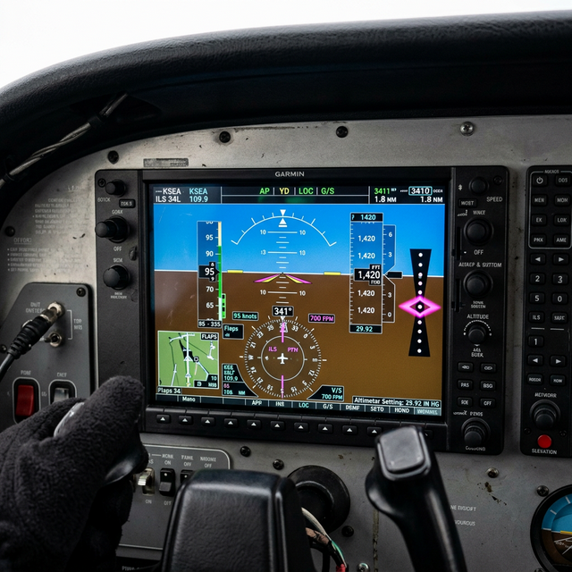

ILS/marker basics
Module Objectives
- Differentiate the specific navigational axes provided by the Localizer and the Glideslope.
- Outline the relationship between the ILS system and Marker Beacons.
- Interpret the visual and auditory cues generated by Outer, Middle, and Inner markers.
Why Does This Matter?

An ILS receiver is aggressively flagged for maintenance after a rough instrument landing in deep fog. The technician quickly verifies the Localizer channel utilizing a ramp tester, watches the horizontal needle sweep smoothly left and right, and proudly signs off the aircraft as fully operational. The next day, the pilot attempts another fog approach, but the vertical Glideslope needle remains solidly pinned to the top of the gauge—they have zero vertical guidance toward the runway threshold. By fundamentally failing to understand that an ILS is composed of two entirely distinct, separate radio frequencies and receivers working in tandem, the technician endangered the flight.
What You Need To Know
The Two Pillars of the ILS
The Instrument Landing System (ILS) is a highly precise radio navigation system designed to thread an aircraft blindly down to the runway threshold through zero-visibility weather. It achieves this by broadcasting two utterly separate guiding beams:
- 1. The Localizer (Lateral Guidance):
- Broadcasts from an antenna array located at the far departure end of the runway. - Provides absolute horizontal (left/right) steering down the direct centerline of the runway. - Uses the highly sensitive VHF frequencies 108.10 MHz to 111.95 MHz (utilizing only odd tenths, like 109.3). - Displayed as the vertical needle swinging left/right on the CDI.
- 2. The Glideslope (Vertical Guidance):
- Broadcasts from an antenna array located immediately physically next to the touchdown zone. - Provides absolute vertical (up/down) steering along a steep ~3° descent slope directly to the tarmac. - Operates in the ultra-high UHF band (329.15 MHz to 335.00 MHz). - Displayed as a horizontal needle (or diamond shape) sliding up/down on the CDI. - Crucial Fact: The Glideslope channel is automatically electronically paired to the Localizer frequency. When the pilot tunes the VHF Localizer frequency, the receiver secretly tunes the paired UHF Glideslope channel in the background.
Marker Beacons (The Distance Fixes)
While the ILS provides precise steering, it historically provided zero information about exactly how far away the runway was. Marker Beacons fill this massive gap by transmitting deeply focused, vertical fan-shaped 75 MHz beams straight up into the air at structurally fixed distances along the approach path. When the aircraft flies through the invisible fan, it acts as an absolute position fix.
A traditional full ILS incorporates three markers:
- Outer Marker (Blue Light / Slow Dashes): Located 4 to 7 miles out. Marks the point where the aircraft should intercept the glideslope beam.
- Middle Marker (Amber Light / Dots & Dashes): Located about 0.5 miles out (3,500 feet from threshold). Usually denotes the Category I decision height (where the pilot must see the runway or abort).
- Inner Marker (White Light / Fast Dots): Located exactly at the runway threshold. Reserved for intense Category II/III low-visibility operations.
System Visualization
graph TD
A[ILS Precision Approach Architecture] --> B[VHF Localizer Channel]
A --> C[UHF Glideslope Channel]
A --> D[75 MHz Marker Beacons]
B -->|Provides| E[Lateral Left/Right Centerline Guidance]
C -->|Provides| F[Vertical Up/Down 3-Degree Descent Path]
D --> G[Outer Marker Focus] -->|Triggers| H[Blue Cockpit Light & Slow Audio Dashes - 5 NM out]
D --> I[Middle Marker Focus] -->|Triggers| J[Amber Cockpit Light & Dot-Dash Audio - 0.5 NM out]
style E fill:#1e40af,stroke:#1e3a8a,stroke-width:2px,color:#fff
style F fill:#166534,stroke:#14532d,stroke-width:2px,color:#fff
On The Job
When rigorously performing an ILS automated ramp check, you must explicitly remember that you are testing two completely disparate radio receivers operating in entirely different frequency bands (VHF and UHF) that happen to be physically housed in the same aluminum chassis. You must verify the Localizer's left/right deflection at standard micro-amp levels, and then you must separately command the test box to sweep the Glideslope's up/down deflection. A pass on the Localizer guarantees absolutely nothing regarding the health of the Glideslope hardware.
Reference Terms
Marker Beacon
Marker beacons transmit 75 MHz vertical fan-shaped signals at fixed points along an ILS approach. Outer marker: slow dashes, blue light. Middle marker: alternating dots/dashes, amber light. Inner marker: fast dots, white light.
ILS components
ILS = Localizer (horizontal/lateral guidance to runway centerline) + Glideslope (vertical guidance, nominally 3° descent path). Together they guide the aircraft to the runway in low visibility. ILS is a precision approach system.
ILS (Instrument Landing System)
A highly sophisticated precision approach architecture utilizing overlapping radio beams to provide absolute 3D steering to a runway.
Localizer
The VHF component of an ILS dedicated exclusively to horizontal lateral runway centerline guidance.
Glideslope
The UHF component of an ILS dedicated exclusively to vertical descent path guidance.
Assessment Check
A complete ILS absolutely requires both a distinct Localizer receiver for lateral centerline guidance and a paired Glideslope receiver for vertical descent guidance, supported fundamentally by Market Beacons marking fixed distances to the runway. --- ---